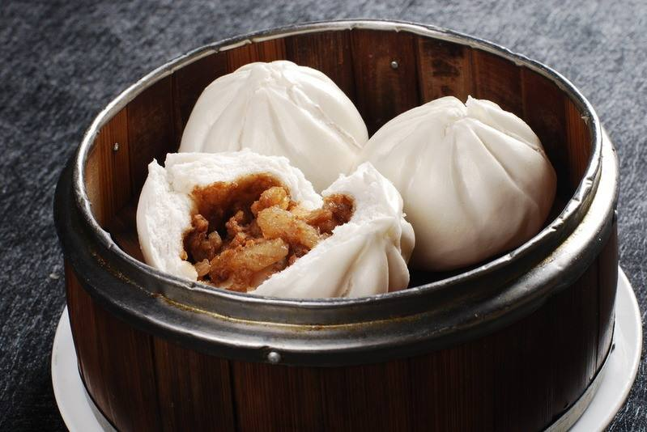
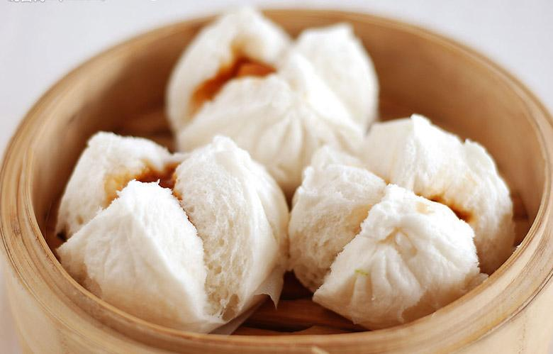

叉烧包是广东地区具有代表性的特色传统西关名点之一，是粤式早茶的“四大天王（虾饺、干蒸烧卖、叉烧包、蛋挞）”之一。叉烧包是因面皮内包入叉烧肉馅，故使用此名。 叉烧包的面皮是用北方常用的发酵面团经过改进而成的。包制时要捏制成雀笼形，因为发酵适当，蒸熟后包子顶部自然开裂，实际上是一种带有叉烧肉馅的开花馒头。叉烧包一般大小约为直径五公分左右，一笼通常为三或四个
叉烧包以切成小块的叉烧，加入蚝油等调味成为馅料，外面以面粉包裹，放在蒸笼内蒸熟而成。叉烧包一般大小约为直径五公分左右，一笼通常为三或四个。好的叉烧包采用肥瘦适中的叉烧作馅，包皮蒸熟後软滑刚好，稍为裂开露出叉烧馅料，渗发出阵阵叉烧的香味。
1. 热锅，倒入A材料(葱2根、姜片5片、洋葱丝30克、芝麻油15克、花生油30克、老抽20克、生抽30克、鸡精5克、蚝油30克、白糖80克、清水100克)中的芝麻油和花生油，再将葱段、洋葱丝和姜片放进锅内爆香至金黄色。 2. 再倒入A材料中的100克清水和其它材料，煮3分钟左右，隔去葱渣等。
3. 迅速倒入B材料（生粉50克、清水100克）进锅中。
4. 继续煮至芡汁呈浓稠状。
5. 将叉烧切成指甲大小的簿片。
6. 将茨汁和叉烧拌匀即成馅料。
1. 将40克老面和150克清水调匀。
2. 将300克低筋面粉倒进厨师机的搅拌桶内。
3. 用橡皮刮刀将面粉和水拌匀。
4. 开启厨师机的2档搅拌。
5. 搅拌至面团成团即可。
6. 放28-35度的室温下进行发酵10个小时左右即成面种。
2. 先用橡皮刮刀将糖和面种稍混合，然后开启厨师机的2档搅拌至糖溶化。
3. 加入臭粉，继续搅拌，再加入20克猪油搅拌均匀。
4. 加入150克低筋面粉和15克泡打粉，继续搅拌。
5. 搅拌成光滑的面团。
6. 将面团分成25个33克左右的小面团。
7. 取一小块面团，擀开成中间厚四周簿的圆形。
8. 右手食指和拇指环住面皮边缘向内聚拢。
9. 一直聚拢到完全收口，不要让包子馅料暴露在外。
10. 将做好了叉烧生坯放进垫了油纸的蒸笼内，大火烧开锅内的水，把蒸笼放上去，盖上盖大火蒸。
11. 一直保持大火蒸6-7分钟即可，香甜的叉烧包就出炉了